A lista abaixo detalha os projetos/demandas que estão sendo executados no momento. Para acessar maiores detahes do desenvolvimento do projeto (cronograma de etapas) clique nos respectivos títulos.
A ordem de classificação segue a mesma ordem da solicitação do projeto, e os mesmos, ficarão listados aqui até 1(uma) semana após a sua conclusão.
Lista dos projetos finalizados
| Nome do Projeto | Interface(s) | Deadline | Status | Histórico |
|---|---|---|---|---|
| Etapa concluída Etapa em produção Etapa não iniciada | ||||
| Relatório do DEA - Proposta visual  | Sílvia DEA: Desenvolvimento do Corpo Docente | 1º Semestre de 2015 | Em espera |
|
| Guia de ambientação | Sílvia e ViníciusDEA: Desenvolvimento do Corpo Docente | 1º Semana de novembro | Em andamento |
|
| Edição vídeo: Coursera (Marketing Analítico) | Sílvia DEA: Desenvolvimento do Corpo Docente | 1º Semana de outubro | Em andamento |
|